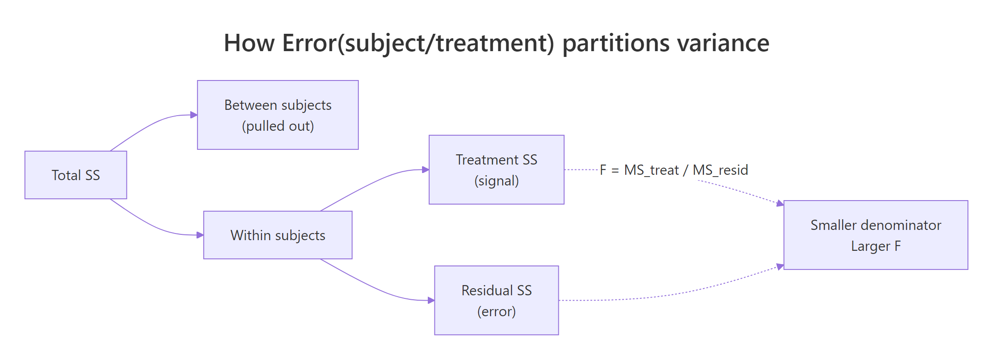
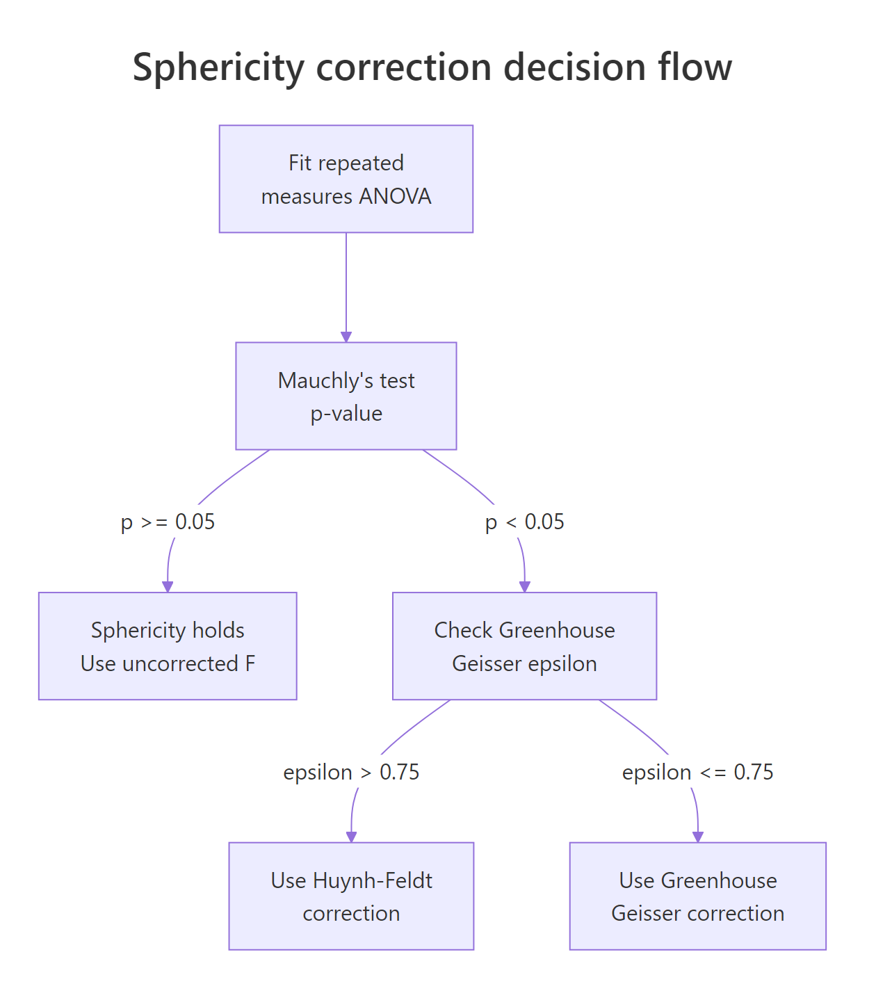
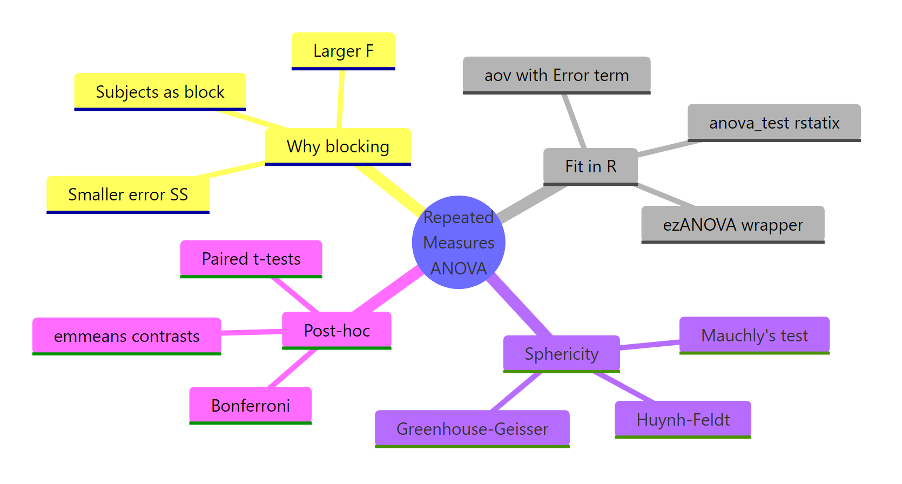

Repeated Measures ANOVA in R: Correct SE, Mauchly's Test, and Greenhouse-Geisser
Repeated measures ANOVA tests whether a within-subject factor shifts an outcome when every subject is measured under every condition. By treating subjects as a block, it removes between-person variability from the error term, shrinks the standard error, and produces a much larger F-statistic than an independent-samples ANOVA on the same data would.
Why does repeating measurements on the same subjects change the analysis?
When the same people are measured under every condition, their individual baselines are baked into every row. An ordinary one-way ANOVA treats those baseline differences as noise and dumps them into the error term. A repeated measures ANOVA pulls them out as a per-subject block, so only within-subject variability is left to compete with the treatment signal. Same data, different partition, bigger F.
Let's make the difference concrete. We'll build six subjects, each measured at three drug doses, where everyone has their own baseline but the dose effect is the same. We then fit the data two ways and read the F-statistic off each.
Look at what happened. The independent ANOVA puts the huge between-subject variation (11,550) into the error pool and reports F = 0.031 with p = 0.969. The repeated measures ANOVA quarantines that variation in the "Error: subject" stratum, leaves only 8.83 units of within-subject noise in the denominator, and reports F = 27.3 with p < 0.0001. The treatment effect was the same in both models; only the standard error changed.
Try it: Scramble the subject IDs so the blocking structure is broken, refit the repeated measures ANOVA, and see the F-statistic collapse back toward the independent value.
Click to reveal solution
Explanation: With random subject IDs the Error stratum cannot isolate the between-subject share of variance, so it spills back into the Within residual. The F-ratio collapses because the denominator is polluted again.
How do you fit a repeated measures ANOVA with aov() and the Error term?
R's aov() expects long-format data: one row per observation, with columns for the subject, the within-factor, and the outcome. The magic is the Error() term in the formula. Writing Error(subject/condition) tells R that subjects are blocks and that we want the condition contrast tested within each subject.
The output comes back in two strata. The first, "Error: subject", is the between-subjects variability we are not interested in. The second, "Error: subject:condition", is the within-subjects pool where the F-test for condition lives. Reading that second stratum is what matters.
Read the two strata from bottom to top. The "subject:condition" stratum has 10 residual degrees of freedom, which is $(n_{sub} - 1) \times (n_{cond} - 1) = 5 \times 2$. The F-ratio 24.12 / 0.88 = 27.3 beats almost every critical value in the F table, so we reject the null that all three dose means are equal.

Figure 1: How Error(subject/treatment) peels between-subject variance out of the error term, leaving only within-subject variability to shrink the F denominator.
Error(subject/condition) becomes essential with two or more within factors: it tells R to build a separate error stratum for each within-factor combination so each effect is tested against the right denominator.Try it: Convert a tiny wide-format frame (subjects as rows, conditions as columns) into long format with pivot_longer(), then refit the model.
Click to reveal solution
Explanation: pivot_longer() melts the three T-columns into a single score column with a parallel time factor. That long layout is what aov() wants.
What is the sphericity assumption and how do you test it with Mauchly's W?
Sphericity is the within-subjects cousin of homogeneity of variance. Formally, the variances of the pairwise differences between conditions must be equal. When you have only two conditions there is only one difference, so sphericity is trivially true; that's why a paired t-test has no sphericity check. With three or more conditions the assumption starts to matter, and a violation inflates the Type I error of your F-test.
aov() won't test sphericity for you. The cleanest way to get Mauchly's W is through ez::ezANOVA(), which returns both the ANOVA table and a sphericity diagnostics table in one object.
Mauchly's W is 0.74 with p = 0.58, so we do not reject the null of sphericity. The uncorrected F from the ANOVA table is the one to report. If p had been below 0.05, we would have needed to adjust the degrees of freedom using Greenhouse-Geisser or Huynh-Feldt, which the next section covers.
ez is unavailable in your environment. You can get the same Mauchly table and corrections from car::Anova() on an lm() fit with a within-subjects idata design. The ezANOVA call is a convenience wrapper around that workflow and prints the two tables together.Try it: Build a dataset where condition 3 has much higher variance than the others, refit with ezANOVA, and check that Mauchly's p drops.
Click to reveal solution
Explanation: Condition C carries six times the residual variance, which blows up the variance of its pairwise differences with A and B. Mauchly catches it.
How do you apply the Greenhouse-Geisser and Huynh-Feldt corrections?
When Mauchly flags sphericity, you shrink the degrees of freedom for both the numerator and the denominator by a factor called epsilon, written $\varepsilon$. That multiplication leaves the F-statistic itself unchanged but moves its p-value upward, so the test becomes more conservative in exact proportion to the sphericity violation.
Two epsilons are reported side by side:
$$\text{corrected df} = \varepsilon \times \text{original df}$$
Where:
- $\varepsilon = 1$ means perfect sphericity (no correction).
- $\varepsilon_{GG}$ is Greenhouse-Geisser: a conservative lower-bound estimate.
- $\varepsilon_{HF}$ is Huynh-Feldt: slightly anti-conservative, nudged above $\varepsilon_{GG}$.
The standard decision rule: if $\varepsilon_{GG} > 0.75$ use Huynh-Feldt; otherwise use Greenhouse-Geisser. The intuition is that GG over-corrects when the violation is mild, and HF under-corrects when the violation is severe.

Figure 2: Decision flow for sphericity. Run Mauchly's test, and if violated compare Greenhouse-Geisser epsilon to 0.75 to pick between GG and Huynh-Feldt.
ezANOVA prints the corrections in its Sphericity Corrections element. Let's look at the sphericity-violating dataset from the previous exercise.
GGe is 0.585, HFe is 0.644. Because $\varepsilon_{GG}$ = 0.585 is below 0.75, we report the Greenhouse-Geisser corrected p-value of 0.0026. Here is what that looks like when you work out the adjusted df by hand from the original $(2, 14)$ design.
The corrected df shrink from (2, 14) to about (1.17, 8.19), which is exactly what ezANOVA uses when it computes p[GG].
Try it: Given a three-condition effect with original df = (3, 21) and GGe = 0.82, compute the Huynh-Feldt corrected df when HFe = 0.91.
Click to reveal solution
Explanation: With $\varepsilon_{GG}$ = 0.82 above 0.75, the decision rule picks Huynh-Feldt. Multiply the original df by $\varepsilon_{HF}$ and round to two decimals for reporting.
How do you run post-hoc pairwise comparisons with paired t-tests?
A significant overall F means "the means aren't all equal." It doesn't say which conditions drive the effect. For that you need pairwise comparisons, and because your data are within-subjects those comparisons must be paired. Using unpaired t-tests here would throw away the subject-blocking advantage you paid for.
Base R's pairwise.t.test() with paired = TRUE is the simplest route. Set p.adjust.method = "bonferroni" to keep the family-wise error rate at 0.05 after testing all pairs.
Every pair is below 0.05 after Bonferroni adjustment: 0mg differs from 50mg (p = 0.008), 0mg differs from 100mg (p = 0.0002), and 50mg differs from 100mg (p = 0.001). The largest effect, unsurprisingly, is between 0mg and 100mg.
For a model-based alternative that gives you estimated marginal means, confidence intervals, and contrast-level control, use emmeans on an lm() fit of the wide-format data. It is also the right tool when you want to combine contrasts across multiple factors later.
paired = TRUE to pairwise.t.test() for within-subjects data. Forgetting paired = TRUE reintroduces the between-subject noise you worked so hard to remove, and the adjusted p-values balloon. The two-line difference in code matters more than any correction.lm(y ~ condition + subject) for emmeans, not the Error-term aov() object. The Error() form splits the fit into multiple strata that emmeans cannot reassemble cleanly. Fitting an ordinary linear model with subject as an additive predictor recovers the same within-subject contrasts and hands them to emmeans in one piece.Try it: Find the comparison with the smallest adjusted p-value in pwise$p.value and report it in one plain-English sentence.
Click to reveal solution
Explanation: The 0mg-vs-100mg comparison has the largest mean difference and the smallest adjusted p.
How do you extend to a two-way within-subjects design?
A two-way within-subjects design has every subject crossed with every combination of two within factors. The formula grows but the ideas do not: you still block on subject, you still check sphericity, and you still apply corrections per effect. The Error() term becomes Error(subject/(A*B)) so that each effect (A, B, and A:B) is tested against its own within-subjects error stratum.
Let's build a 6-subject times 2-drug times 3-time design and fit it both ways.
Three separate strata, three separate F-tests. The main effects of drug and time are both strongly significant; the interaction is not. But aov() skips the sphericity diagnostics, so we refit with ezANOVA to see Mauchly's test per effect.
drug has only one df and is exempt from sphericity. For time and the drug:time interaction, Mauchly's p is above 0.05 in both cases, so no correction is needed. If either had flagged, we would look up the corresponding row in ez_2w$\Sphericity Corrections\`` and pick GG or HF by the 0.75 rule.
aov() output hides the Mauchly tests and correction tables behind the car::Anova() + idata boilerplate. ezANOVA packs all of it into one call.Try it: Inspect ez_2w and identify which effect (if any) would need a Greenhouse-Geisser correction under the 0.75 rule.
Click to reveal solution
Explanation: Neither Mauchly test flagged (both p > 0.05), so the uncorrected F-values in ez_2w$ANOVA are the ones to report. If time had flagged, GGe = 0.83 is above 0.75, so we would report Huynh-Feldt for that effect.
Practice Exercises
Exercise 1: Compare the two F-values on a linear-trend simulation
Simulate 10 subjects measured at 4 time points, each with their own baseline, a small linear time trend, and noise. Fit both an independent-samples ANOVA and a repeated measures ANOVA. Report both F-values and explain the gap in one sentence.
Click to reveal solution
Explanation: The independent fit dumps all 13,000+ units of between-subject variance into the error term and drowns out the time trend. The repeated-measures fit isolates it as a separate stratum, revealing a highly significant F.
Exercise 2: Sphericity correction on ChickWeight
Using ChickWeight, keep only Diet == 1 and Time values in c(0, 2, 4, 6). Fit a repeated measures ANOVA of weight on Time. Run Mauchly's test through ezANOVA and report the appropriately corrected F with its adjusted df and p-value.
Click to reveal solution
Explanation: Mauchly flags sphericity (p < 0.001). Since $\varepsilon_{GG} = 0.62 < 0.75$, report the Greenhouse-Geisser line: F(0.62 x 3, 0.62 x 57) = F(1.86, 35.4), p = 3.1e-13.
Exercise 3: Selective correction in a two-way within design
Simulate a two-way within design (drug x timepoint, 8 subjects), fit with ezANOVA, identify any sphericity violations, apply corrections only to the violated effects, and run paired post-hoc comparisons for the factor with the largest main effect.
Click to reveal solution
Explanation: timepoint carries increasing variance by design, so Mauchly flags it; we apply the corresponding GG or HF correction only to that effect and leave drug uncorrected. Paired t-tests pinpoint which time-pair gaps drive the main effect.
Complete Example
Here is a full end-to-end workflow on a small simulated caffeine study. Ten participants were tested on a reaction-time task under three caffeine dosages (0, 100, 200 mg). Goal: estimate whether caffeine changes reaction time, using the right SE.
Read the pipeline as one sentence: pivot wide to long, visualize, fit with Error(subject/dose), double-check sphericity with ezANOVA, and pin down which dose pairs differ with paired Bonferroni t-tests. In the final write-up you report the (possibly corrected) F, its df, the p-value, and the significant pairwise comparisons.
Summary

Figure 3: The full pipeline: why blocking, how to fit, sphericity, corrections, post-hoc.
| Step | Function | Why it matters |
|---|---|---|
| Format data | pivot_longer() |
aov() needs long format (one row per observation) |
| Fit model | aov(y ~ within + Error(subject/within)) |
Blocks on subject so the F-ratio uses within-subjects SE |
| Check sphericity | ezANOVA() or car::Anova() + idata |
Mauchly's W with p-value per within-subjects effect |
| Correct if violated | Greenhouse-Geisser (eps <= 0.75) or Huynh-Feldt (eps > 0.75) | Shrinks df, inflates p, keeps Type I error at alpha |
| Post-hoc | pairwise.t.test(..., paired = TRUE) or emmeans |
Which specific condition pairs drive the overall F |
The core insight: repeated measures ANOVA is not a different test, it is the same test after partitioning out between-subject variance. When your design lets you block on subject, taking that block out of the error term buys you power for free.
References
- R Core Team. aov() documentation. Link
- Lawrence M.A. ez: Easy Analysis and Visualization of Factorial Experiments (CRAN). Link
- Fox J., Weisberg S. An R Companion to Applied Regression (car package). Link
- Mauchly J.W. (1940). Significance test for sphericity of a normal n-variate distribution. Annals of Mathematical Statistics 11(2): 204-209.
- Greenhouse S.W., Geisser S. (1959). On methods in the analysis of profile data. Psychometrika 24: 95-112.
- Huynh H., Feldt L.S. (1976). Estimation of the Box correction for degrees of freedom from sample data in randomised block and split-plot designs. Journal of Educational Statistics 1: 69-82.
- Maxwell S.E., Delaney H.D. (2004). Designing Experiments and Analyzing Data: A Model Comparison Perspective, 2nd ed. Erlbaum, Chapter 11.
- Kassambara A. rstatix package: anova_test() reference. Link
Continue Learning
- One-Way ANOVA in R, the independent-samples counterpart; read it side by side with this post to see exactly which pieces of the error term move where.
- Post-Hoc Tests After ANOVA, deeper coverage of Tukey, Bonferroni, and Scheffe adjustments that all pair naturally with paired t-tests.
- Two-Way ANOVA in R, the between-subjects two-factor design; compare its Error structure to the within-subjects formula from Section 6 above.